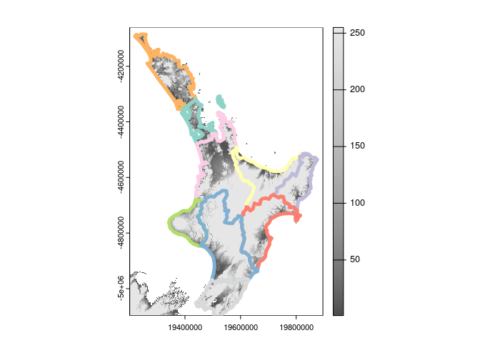
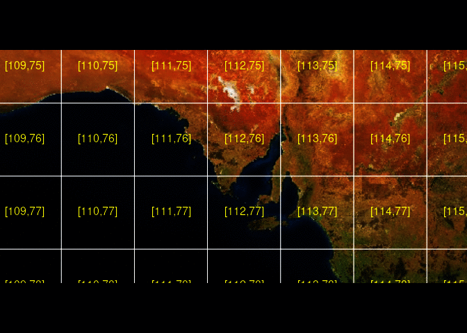

The goal of ceramic is to obtain web map tiles. Use a spatial object to define the region of interest.
library(ceramic)
#> Loading required package: terra
#> terra 1.7.23
roi <- raster::extent(100, 160, -50, 10)
im <- cc_location(roi)
terra::plotRGB(im)
We can use raster, sp, or sf objects to define an extent. This provides a very easy way to obtain imagery or elevation data for any almost any region using our own data.
sql <- "SELECT shapeGroup FROM geoBoundariesCGAZ_ADM0 WHERE shapeGroup IN ('BOL')"
dsn <- "/vsizip//vsicurl/https://github.com/wmgeolab/geoBoundaries/raw/main/releaseData/CGAZ/geoBoundariesCGAZ_ADM0.zip"
bol <- sf::read_sf(dsn, query = sql)
im <- cc_location(bol)
terra::plotRGB(im)
Even if the data uses a map projection it will be converted into a region to match the Mercator extents used by Mapbox image servers.
There are basic heuristics to decide if data is projected or just in “longitude,latitude” in the usual raster package way.
Raster elevation data is also available.
north <- nz[nz$Island == "North", ]
dem_nz <- cc_elevation(north, type = "elevation-tiles-prod" )
## plot elevation data for NZ north
dem_nz[!dem_nz > 0] <- NA
terra::plot(dem_nz, col = grey(seq(0, 1, length = 51)), breaks = quantile(unique(terra::values(dem_nz)), seq(0, 1, length = 52), na.rm = TRUE), legend = FALSE)
plot(st_transform(st_cast(north, "MULTILINESTRING")["Name"], terra::crs(dem_nz)), add = TRUE, lwd = 5)
I thought you said tiles?
Indeed, the cc_location() and cc_elevation() functions no longer use tiles. WAT
But, they used to run get_tiles() behind the scenes.
This function and its counterparts get_tiles_zoom(), get_tiles_dim() and get_tiles_buffer() will only download files.
tile_summ <- get_tiles_zoom(north, zoom = 8)
#> Preparing to download: 48 tiles at zoom = 8 from
#> https://api.mapbox.com/v4/mapbox.satellite/
length(tile_summ$files)
#> [1] 48
str(tile_summ$tiles)
#> List of 2
#> $ tiles:'data.frame': 48 obs. of 2 variables:
#> ..$ x: int [1:48] 250 251 252 253 254 255 250 251 252 253 ...
#> ..$ y: int [1:48] 153 153 153 153 153 153 154 154 154 154 ...
#> ..- attr(*, "out.attrs")=List of 2
#> .. ..$ dim : Named int [1:2] 6 8
#> .. .. ..- attr(*, "names")= chr [1:2] "x" "y"
#> .. ..$ dimnames:List of 2
#> .. .. ..$ x: chr [1:6] "x=250" "x=251" "x=252" "x=253" ...
#> .. .. ..$ y: chr [1:8] "y=153" "y=154" "y=155" "y=156" ...
#> $ zoom : num 8
#> - attr(*, "class")= chr "tile_grid"This is really for expert use when you want to control the downloaded tile files yourself directly.
Providers
The default map provider is Mapbox, but ceramic is written for general usage and also provides access to the joerd AWS tiles via the type = "elevation-tiles-prod" argument.
pt <- cbind(175.6082, -37.994)
nz_z12 <- cc_location(pt, buffer = 100000, type = "elevation-tiles-prod")Installation
Install ceramic from CRAN with:
install.packages("ceramic")You can install the development version of ceramic from Github.
## install.packages("remotes")
remotes::install_github("hypertidy/ceramic")Set your mapbox API key with
Sys.setenv(MAPBOX_API_KEY = "<yourkey>")Example
This complete example gets tiled imagery that we can use as real data.
The code here
- generates a bounding box in longitude-latitude
- reads the raster data using GDAL
then we look at the actual tiles involved,
- uses slippymath to find sensible tiles for the region
- downloads them to a local cache
- summarizes the tiles as a spatial (wk) object
library(ceramic)
## a point in longlat, and a buffer with in metres
pt <- cbind(136, -34)
im <- cc_location(pt, buffer = c(1e6, 5e5), type = "mapbox.satellite")
op <- par(bg = "black")
plotRGB(im)
## get the approximately matching tiles (zoom is magic here, it's all wrapped - needs thought)
tileset <- get_tiles(pt, buffer = c(1e6, 5e5))
#> Preparing to download: 28 tiles at zoom = 7 from
#> https://api.mapbox.com/v4/mapbox.satellite/
tiles <- ceramic_tiles(zoom = tileset$tiles$zoom, type = "mapbox.satellite")
plot(tiles_to_polygon(tiles), add = TRUE, border = "white")
middle <- function(x, y) {
x + (y - x)/2
}
text(middle(tiles$xmin, tiles$xmax), middle(tiles$ymin, tiles$ymax), lab = sprintf("[%i,%i]", tiles$tile_x, tiles$tile_y),
col = "yellow")
par(op)Please note that the ‘ceramic’ project is released with a Contributor Code of Conduct. By contributing to this project, you agree to abide by its terms.